Типовые схемы включения операционных усилителей
Инвертирующий усилитель
Наиболее популярная и часто встречающаяся схема усилителя на операционных усилителях (ОУ) (рис. 1). Инвертирующий усилитель характеризуется тем, что неинвертирующий вход операционного усилителя заземлён (то есть подключен к общему выводу питания). Входной сигнал подается на инвертирующий вход, а неинвертирующий вход подключается к общему проводу. В идеальном ОУ разность напряжений между входами усилителя равна нулю. Поэтому цепь обратной связи должна обеспечивать напряжение на инвертирующем входе также равное нулю.
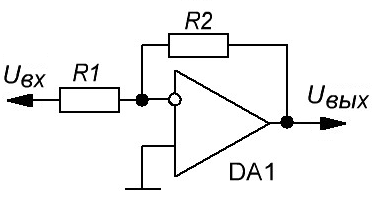
Работа схемы объясняется следующим образом. Ток протекающий через инвертирующий вывод в идеальном ОУ равен нулю, поэтому токи протекающие через резисторы R1 и R2 равны между собой и противоположны по направлению, тогда основное соотношение будет иметь вид:
IR1= –IR2
IR1=Uвх/R1
IR2=Uвых/R2
Uвх/R1= –Uвых/R2
Коэффициент усиления определяется соотношением резисторов R1 и R2 и считается по формуле:
KU= –R2/R1
Знак минус в данной формуле указывает на то, что сигнал на выходе схемы инвертирован по отношению к входному сигналу.
Входное сопротивление определяется резистором R1 (Rвх=R1). Если его сопротивление, например 100 кОм, то и входное сопротивление усилителя будет 100 кОм. Rвых близко к нулю
Инвертирующий усилитель с повышенным входным сопротивлением
В предыдущей схеме соотношение входного сопротивления и коэффициента усиления может не подойти для реализации какого-либо проекта. Например, нам нужен усилитель с К=100. Тогда, исходя из того, что значения резисторов должны быть в разумных пределах берем R2=1 МОм, а R1=10 кОм. То есть, входное сопротивление усилителя будет равным 10 кОм, что в некоторых случаях недостаточно. В этих случаях можно применить следующую схему изображенную на рис. 2.
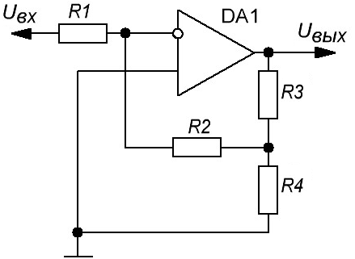
В данном случае, коэффициент усиления считается по следующей формуле:
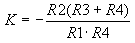
То есть, при том же коэффициенте усиление сопротивление R1 можно увеличить, а значит и повысить входное сопротивление усилителя.
Неинвертирующий усилитель
Схема неинвертирующего усилителя изображена на рис. 3. Неинвертирующий усилитель характеризуется тем, что входной сигнал поступает на неинвертирующий вход операционного усилителя.
Работа данной схемы объясняется следующим образом, с учётом характеристик идеального ОУ. Сигнала поступает на усилитель с бесконечным входным сопротивлением, а напряжение на неинвертирующем входе имеет такое же значение, как и на инвертирующем входе. Ток на выходе операционного усилителя создает на резисторе R2 напряжение, равное входному напряжению.
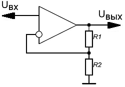
Основные параметры данной схемы описываются соотношением:
Uвх=Uвых·R2/(R1+R2)
Отсюда в коэффициент усиления неинвертирующего усилителя:
KU=Uвых/Uвх=(R1+R2)/R2=1+R1/R2
Таким образом, можно сделать вывод, что на коэффициент усиления влияют только номиналы пассивных компонентов.
Необходимо отметить особый случай, когда сопротивление резистора R2 намного больше R1 (R2 >> R1), тогда коэффициент усиления будет стремиться к единице. В этом случае схема неинвертирующего усилителя превращается в аналоговый буфер или операционный повторитель с единичным коэффициентом передачи, очень большим входным сопротивлением и практически нулевым выходным сопротивлением. Что обеспечивает эффективную развязку входа и выхода.
Коэффициент обратной связи такого усилителя :
Kос= R2/(R2+R1).
В данном случае фаза
сигнала на входе и на выходе совпадает.
Основное отличие от
инвертирующего усилителя заключается в повышенном входном сопротивлении,
которое может достигать 10 МОм и выше. Rвых почти 0.
Если при реализации данной схемы в практических конструкциях, необходимо предусмотреть развязку с предыдущими каскадами по постоянному току - установить разделительный конденсатор, то нужно между входом ОУ и общим проводом включить резистор сопротивлением около 100 кОм, как показано на рис. 4.
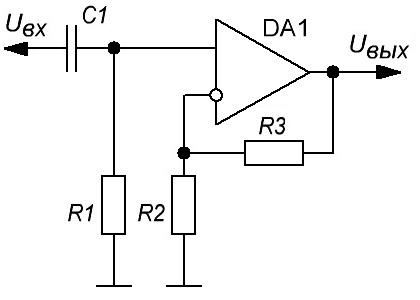
Усилитель с изменяемым коэффициентом усиления
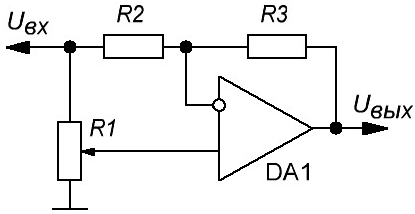
Примем R1=R2=R3=R и введем некую переменную А, которая может принимать значения от 1 до 0 в зависимости от поворота движка переменного резистора R1. Тогда коэффициент усиления можно определить так:
K=2A-1
Входное сопротивление практически не зависит от положения движка переменного резистора.
Фильтр высоких частот
Фильтр высоких частот (ФВЧ) требуется для отсекания сигнала, частота которого ниже определенного порога, который называется, кстати, частотой среза. Схема простейших ФВЧ показаны на рис. 6.
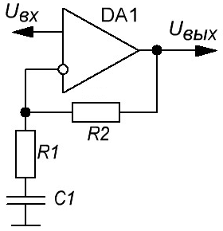 |
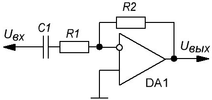 |
| a) | б) |
а) - с неинвертирующим включением ОУ, б) - с инвертирующим включением ОУ
Это фильтр первого порядка с ослаблением ненужного сигнала крутизной - 6дБ на октаву. Определить частоту среза можно, рассчитывая реактивное сопротивление конденсатора Xc. Оно равно сопротивлению резистора, включенного последовательно с конденсатором.
Xc=2πfC
где
f - частота в Герцах,
C - емкость в Фарадах.
Если крутизна фильтра первого порядка кажется недостаточной, можно использовать фильтр второго порядка с крутизной 12 дБ на октаву как показано на рисунке.
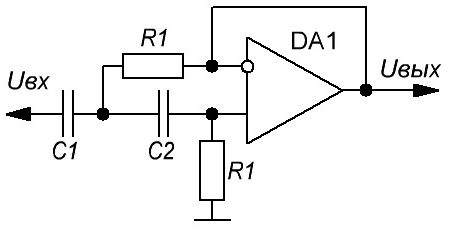
Чтобы посчитать его граничную частоту можно воспользоваться следующими соотношениями:
R1=R2; С1=2С2;
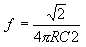
При выборе резисторов надо учесть, что их номиналы должны лежать в пределах 10-100 кОм, поскольку выходное сопротивление фильтра растет вместе с частотой и если номиналы резисторов выходят за вышеуказанные рамки это может сказаться отрицательно на работе фильтра.
Фильтр низких частот
Фильтр низких частот (ФНЧ) отрезает сигнал, частота которого выше частоты среза. В принципе, все то же самое, что и в ФВЧ, только конденсатор включается не последовательно с резистором, а параллельно ему.
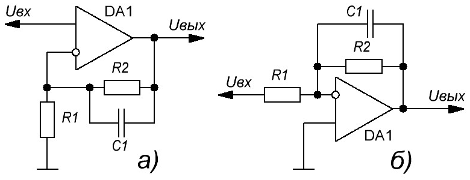
а) - с неинвертирующим включением ОУ,
б) - с инвертирующим включением ОУ
Частота среза считается ровно таким же способом, как и в случае ФВЧ.
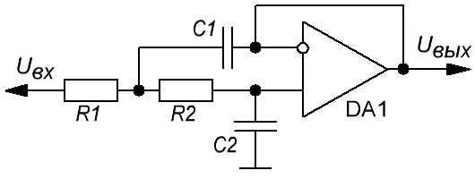
Полосовой фильтр
Полосовой фильтр применяется в тех случаях, когда необходимо выделить полосу частот из всего спектра. Например, в спектроанализаторах.
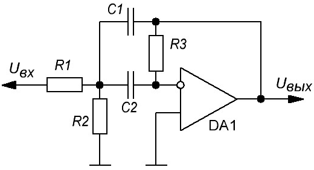
Фильтр-пробка
Фильтр-пробка служит для ослабления (практически до нуля) выбранной частоты F.
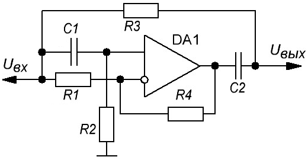
Частота F рассчитывается по формуле:
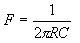
где
R=R3=R4, C=C1=C2;
При построении этого фильтра очень важна точность номиналов компонентов - от этого зависит степень подавления выбранной частоты. Так, при применении резисторов и конденсаторов с допуском 1%, можно получить ослабление частоты до 45 дБ, хотя, теоретически, можно добиться и 60 дБ.
Например, если вы хотите ослабить частоту 50Гц, то берем следующие номиналы:
R1=R2=10 кОм, R3=R4=68 кОм, С1=С2=47 нФ.
Фильтр-пробка с двойным Т-мостом
С помощью этого фильтра можно не только ослаблять выбранную частоту, но и регулировать степень её ослабления переменным резистором R4. Формула расчета номиналов такая же, как и в предыдущем случае.
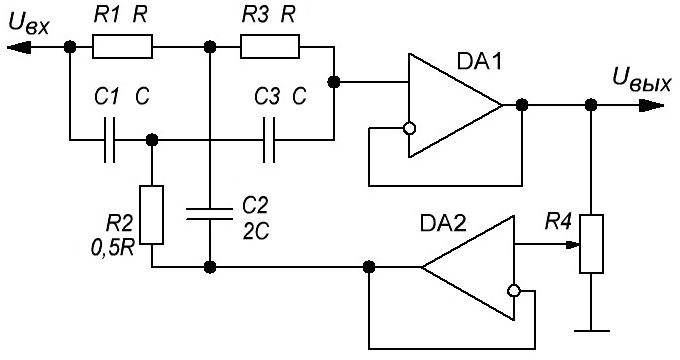
Повторитель напряжения
Повторитель напряжения представляет собой неинвертирующий усилитель, обладающий единичным коэффициентом усиления. Реализуется это замыканием отрицательной обратной связи и подачей полезного сигнала на неинвертирующий вход.
При таком включении операционный усилитель старается обеспечить на выходе точную копию сигнала приходящего на его вход. В каждый момент времени Uвых=Uвх, поэтому описываемая схема и называется повторителем.
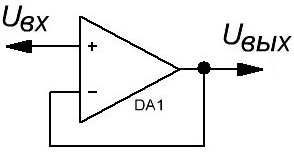
Rос=0, R1 - бесконечно велико;
Ku=1;
Kос=1;
Rвх очень велико, Rвых почти 0.
Усилитель с единичным коэффициентом усиления называют также буфером или буферным каскадом. Обладая большим входным и малым выходным импедансами, повторитель, как нельзя лучше, подходит для согласования каскадов по сопротивлению. Таким образом соблюдается главное правило схемотехники — входное сопротивление следующего каскада должно быть минимум в 3, а лучше в 10 раз больше выходного сопротивления предыдущего каскада. В таком случае сигнал не претерпевает искажений.
Преобразователь тока в напряжение
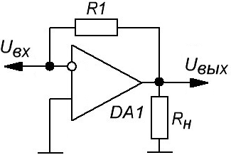
Uвых= -Iвх/R1
Преобразователь напряжения в ток
Один из вариантов использования инвертирующего ОУ - нагрузка включается вместо Rос.
Iвых=-Uвх/R1;
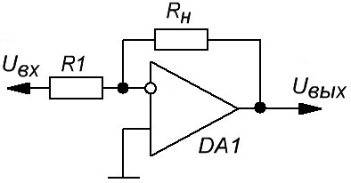
Инвертирующий сумматор
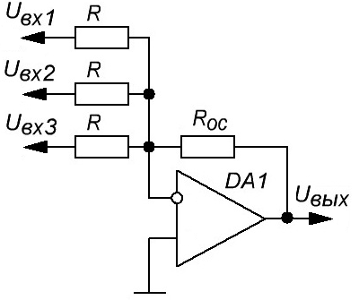
Uвых=-(Uвх1+Uвх2+Uвх3)Rос/R;
Неинвертирующий сумматор
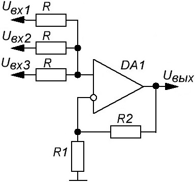
Uвых=(R1+R2)/R1·(Uвх1+Uвх2+Uвх3)/n
(в данном случае n=3);
Разностный усилитель
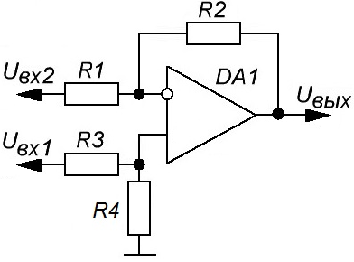
Uвых=R2/R1×(Uвх1-Uвх2)
Интегратор
Интегратор позволяет реализовать схему, в которой изменение выходного напряжения пропорционально входному сигналу. Схема простейшего интегратора на ОУ показана на рис. 19. Работа интегратора основана на том, что инвертирующий вход заземлён, согласно принципу виртуального замыкания. Через резистор R1 протекает входной ток Iвх, в тоже время для уравновешивания точки нулевого потенциала, конденсатор будет заряжаться током одинаковым по величине Iвх, но с противоположным знаком. В результате на выходе интегратора будет формироваться напряжение, до которого конденсатор заряжается этим током. Входное сопротивление интегратора будет равно сопротивлению резистора R1, а выходное сопротивление будет определяться параметрами ОУ.
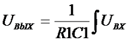
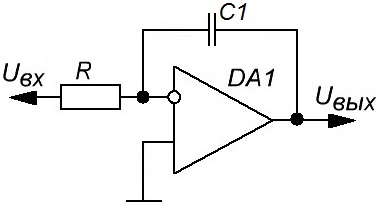
Интегратор имеет ряд преимуществ по сравнению с интегрирующими цепочками. Во-первых, RC и RL цепочки значительно ослабляют входной сигнал, а во-вторых, имеют высокое выходное сопротивление.
Интеграторы применяются во многих аналоговых устройствах, таких как активные фильтры и системы автоматического регулирования
Дифференциатор
Дифференциатор по своему действию противоположен работе интегратора, то есть выходной сигнал пропорционален скорости изменения входного сигнала. Схема простейшего дифференциатора показана на рис. 20. Для дифференцирования сигналов применяют дифференциатор на ОУ, состоящий из ОУ DA1, входного конденсатора С1 и резистора R1, через который осуществляется положительная обратная связь с выхода ОУ на его вход.
При поступлении сигнала на вход дифференциатора конденсатор С1 начинает заряжаться током Iвх, за счёт принципа виртуального замыкания ток такой же величины будет протекать и через резистор R1. В результате на выходе ОУ будет формироваться напряжение пропорционально скорости изменения входного напряжения.
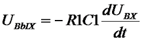
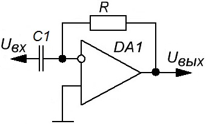
Мультивибратор
Для получения несимметричного мультивибратора резистор в цепи ООС заменяется двумя параллельными диодно-резисторными цепями (рис. 21).
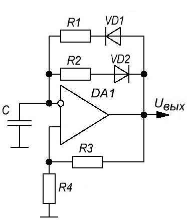
Формирует прямоугольные импульсы со следующими параметрами:
Время импульса:
tи=R1Cln(1+2R4/R3);
Время паузы:
tп=R2Cln(1+2R4/R3);
Если убрать цепь R2VD2 и диод VD1, то получим симметричный мультивибратор, для которого
tи=tп.
Одновибратор (ждущий мультивибратор)
Ждущий мультивибратор в отличие от автоколебательного на выходе формирует одиночный импульс под действием входного сигнала, причём длительность выходного импульса зависит от номиналов элементов обвязки операционного усилителя.
Продолжительность импульса:
tи=R3Cln(1+R1/R2).
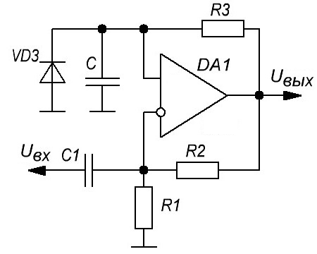
Источники
electronicsblog.ru - Схемы включения операционных усилителей